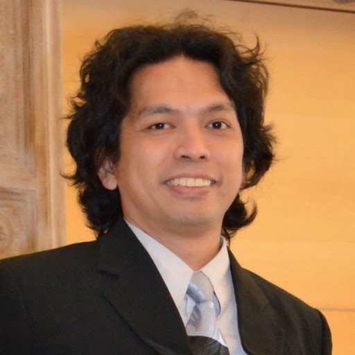

Doctor of Engineering
Universität Paderborn (UPB), Germany
Specialization in optical communication systems, optical transceiver architectures, and coherent optical OFDM modulation.
Associate Professor at Rajamangala University of Technology Isan (RMUTI), Khon Kaen Campus, Thailand · IEEE Senior Member · Head of Broadband Optical Network Laboratory (BON LAB).

Formal degrees and specialized graduate research in telecommunications and optical communications:
Specialization in optical communication systems, optical transceiver architectures, and coherent optical OFDM modulation.

Telecommunication Engineering with a focus on satellite networking, traffic protocols, and wireless retransmission schemes.

Telecommunication Engineering foundation covering electromagnetic theory, antenna design, and analog/digital communications.
Professional positions and dedicated academic service history at RMUTI Khon Kaen:
Department of Electronics and Telecommunication Engineering, Faculty of Engineering, Rajamangala University of Technology Isan (RMUTI), Khon Kaen Campus, Thailand.
Elevated to Senior Member grade by the Institute of Electrical and Electronics Engineers (IEEE) in recognition of professional maturity and significant engineering achievements.
Faculty of Engineering, Rajamangala University of Technology Isan (RMUTI), Khon Kaen Campus. Founded BON LAB and established advanced optical & FPGA hardware experimental facilities.
Faculty of Engineering, Rajamangala University of Technology Isan (RMUTI), Khon Kaen Campus, Thailand. Instructing communication systems, signals & systems, and laboratory courses.
Direct communication channels, university office email, and verified academic repositories: